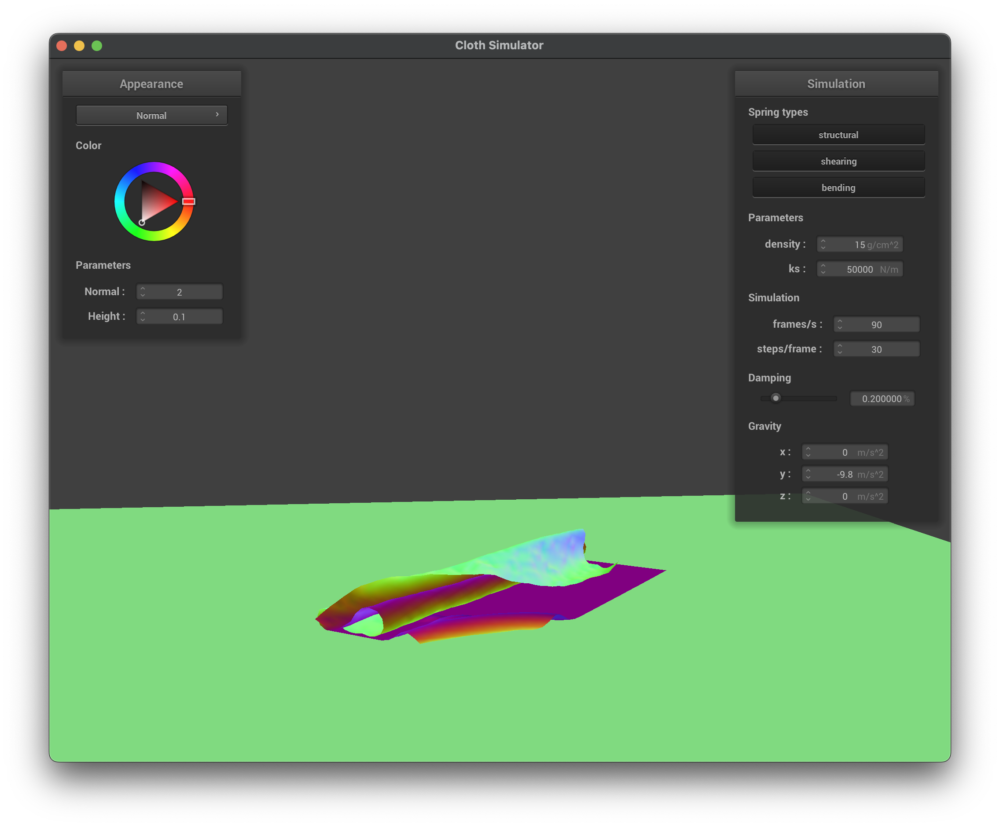

In this homework, we implemented a cloth simulation system that models the behavior of the fabric through a system of mass and springs. To estimate realistic behavior, we used structural, sheering, and bending constraints between the point masses in addition to pinning certain points to visualize constraint physics. Then, to actually calculate the motion of the point masses, we implemented physical equations with finding total forces on a point mass and Verlet integration to update their positions. To show interactions with the environment, we added collision detection for spheres, planes, and itself with spatial hashing optimization. Lastly, we learned about shaders which enabled for parallelized calculations of shadings and vertex displacement. Throughout the process of working on this project, we were constantly surprised by the speed up as compared to rendering in the past homework. In addition, it was particularly cool how cloth could be simplified into just a relatively low resolution grid of point masses and springs.
Part 1: Masses and springs
To start, we created a grid of point masses then created constraints ("springs") between the point masses. This is what it looked like when rendered:
Close up of cloth wireframe (with all constraints enabled)
Overall wireframe of point masses and springs
without any sheering constraints
with only sheering constraints
Part 2: Simulation via numerical integration
Next, we worked on implementing physics with numerical integration. We calculated all the external forces (like gravity) that should apply on the point masses. In addition, we considered the effects of each constraint with some parameters like the spring constant ks, the material density of the cloth d, and the damping factor.
How the spring constant ks affects the simulation
When the spring constant is low, such as ks = 1000, the cloth becomes notably stretchy and floppy, takes a longer time to come to rest, and exhibits more pronounced sagging at the resting time. A notable difference here is Conversely, when the spring constant is high, such as ks = 50000, the cloth behaves in a stiff, more rigid manner, settles more quickly, and ends up more square. This makes sense since the "springs" are more expansive with lower ks values.
ks=1000 mid flop
ks=1000 resting
ks=50000 mid flop
ks=50000 resting
What about for density?
When the density is set to a low value, such as 1 g/cm^2, the cloth became lighter and it almost felt like it was floating around. In addition, it seemed like there was less tension with the cloth being somewhat square during the flops. In the end, it rested with a very small fold. With a density of 150 g/cm^2, the cloth seemed much heavier and moved with more ripples. It seemed to oscillate a little more and rested with a larger sagging in the middle.
low density, d=1 mid flop
low density, d=1 resting
high density, d=150 mid flop
high density, d=150 resting
What about for damping?
At zero damping, the cloth was practically swinging around and didn't seem to come to a rest. All motions were exaggerated and it seemed like every constraint time step was at the limit of the 110% rule. It looked really cool and had many ripples throughout the simulation. Conversely, at higher damping values like 0.839% shown below, the cloth settles slower than the default but much faster than no damping and exhibits fewer oscillations. It kind of looked like it was moving in slow motion since it took more than 12 seconds to settle. There were also a lot less sharp ripples during the simulation.
no damping starting
no damping pt 2
no damping pt 3
no damping pt 4
a lot of damping start
a lot of damping after 3 seconds
a lot of damping after 9 seconds
a lot of damping after 12 seconds
A screenshot of the rested shaded cloth from scene/pinned4.json
4 corners pinned
4 corners pinned mesh
Part 3: Handling collisions with other objects
In order for the cloth to interact with other objects in the environment, we implemented collision detection (and handling) for spheres and planes in the scene. For spheres, we calculated the distance the point mass was from the center of the sphere.
If the distance was less than the radius of the sphere, we would take the directional vector (in the direction of the point mass) and extend it just slightly out of the sphere's radius in order to keep the point mass out. Specifically, we used
a friction term multiplied by the distance in which the last position was out of the sphere. Then, for plane intersections, there isn't a concept of "inside" or "outside" of the plane so we looked to see if the previous point was on a different
side of the plane then the next position. This means finding the signed distance from the plane as defined by taking a dot product of the norm and the vector between the point defining the plane & the point mass. In the case that the point
mass had inadvertantly crossed over (and thus collided) we take the intersection point on the plane and add a small SURFACE_OFFSET (* opposite vector of the point mass direction to the plane point) to bring it back on the correct side.
Shaded cloth resting on a Sphere
In the experiment results below, we found that increasing the spring constant greatly increased the perceived stiffness of the cloth. In particular, it seemed that the resting position of ks=50000 had the cloth act almost like
paper in the way that the curves are more straight and there is some tension causing the overall cloth to be raised at a height above those of the other simulations. With smaller constants like ks=500, we found that the cloth felt
more loose and had many more curves and folds on the sphere. It was more like a table cloth.
cloth draped on sphere, ks = 5000
cloth draped on sphere, ks = 500
cloth draped on sphere, ks = 50000
Shaded cloth resting on a Plane
cloth on resting on plane
cloth on resting on plane (wireframe view)
Part 4: Handling self-collisions
In order for the cloth to interact with itself, we needed to implement collision logic between point masses as well. However, the first consideration is the performance of doing so. When we only had a singular sphere or plane to test
intersections against, it was just linearly to the number of point masses that we had. However, if we had to test against each point mass as well, the time complexity becomes quadratic. To remedy this, we first implemented spatial hashing.
This means we breakdown the scene into small spatial volumes and thus we only need to test for intersections in the same, small spatial volume. This is done by hashing the position of each point mass and using it as a key to be put into
the corresponding buckets. Next, to test for collision, we simply found the distance to the test point and saw if it was less than 2 * thickness. If it was within bounds, we simply used the reverse direction vector towards the sample
point and moved the point away. In particular, we did this for all points within this bound and then scaled the total movement by the number of points-in-range and the simulation step. In the following figure, we show what happens
during various phases of a self-collision enabled scene:
default parameters starting
default parameters initial self-collision
default parameters ending state
Self-collisions with varying density
In the figures below, we experimented with the cloth self-collision when using large and small densities of material. When we had d=150 g/cm^2, the cloth had significantly more ripples and fell faster. When we set d=1 g/cm^2, the cloth
had a much more graceful fall with less ripples and folded neatly when it hit the ground. In the end though, both densities resulted in similar resting state and the behavior really only differed with respect to the speed and ripples.
d=150 starting
d=150 initial self-collision
d=150 ending state
d=1 starting
d=1 initial self-collision
d=1 ending state
Self-collisions with varying k_s
In the figures below, we experimented with the cloth self-collision when using large and small spring constants. When we had ks=500, the cloth fell very similarly to when we had a very large density. It exhibited the same behavior
of creating lots of ripples but it did seem to settle at an average speed. With a much higher ks, the cloth became a bit more stiff than the low density simulation. It folded much more neatly than the ks=500 and also happened at an average speed.
In the end, the fold was much more smooth for the large ks.
ks=500 starting
ks=500 initial self-collision
ks=500 ending state
ks=50000 starting
ks=50000 initial self-collision

ks=50000 ending state
Part 5: Shaders
In the past homework, we used the CPU to compute shading information at surfaces in our scene. However, with the availability of GPUs, it is possible to utilize the parallelized operations with parameters like transformation matrices, light sources
being consistent in the scene. In particular, we implemented shader programs that are able to run on the GPU. The light and radiance calculations we did in previous homework can now be implemented as fragment shaders (where a fragment is analogous to a pixel sample).
Then, we also have the ability to write vertex shaders that operate on the scene positions of the vertices to be transformed into screen space. Since we control this process, we can also add displacement maps to adjust the position after the physical
simulation logic had been completed.
As an example, we implemented the Blinn-Phong shading model from the previous homework in a fragment shader. The shading model estimates the lighting contribution from ambient lighting, diffused lighting, and specular highlights.
In the shader program, we have the information for the light position and viewer position where we can derive the direction of the glance. From there, we used the same equation as homework 3 for diffused light and specular lighting.
Below, we show the contributions of each component of the Blinn-Phong model along the final result:
Entire Blinn-Phong model
Blinn-Phong only ambient model
Blinn-Phong only diffuse model
Blinn-Phong only specular model
Custom texture using a texture shading model
Custom texture on sphere
Custom texture on cloth on sphere
Bump and Displacement Mapping
Below, we show the results of using a bump mapping and displacement mapping vertex/fragment shader. The approach differs in adding texture through scaling the norm to be that of the texture in a fragment shader vs.
the physical moving of vertices in vertex shaders, respectively. Specifically, we ran the bump and displacement visualization on our previous custom texture's r channel as the suggested bump/displacement height.
In the end, it was very hard to see a difference between the two approaches. Wtih similarly tuned parameters, the only difference we noticed was that towards portion where the cloth rests on the sphere, the displacement
method gave more of a jagged edges appearance. This would make sense since the vertices are physically moved by the vertex shaders vs the fragment shader emulating the raised bumps.
Bump mapping on cloth on sphere
Displacement mapping on cloth on sphere
Bump mapping on cloth
Then, we tested finer and coarser definitions of the underlaying sphere by using 128 and 16 sections, respectively. As expected from the previous part, it was already hard to see a difference between the techniques. With the coarse
underlaying geometry, the techniques essentially had the same visual effect.
Bump mapping on sphere (-o 128 -a 128)
Displacement mapping on sphere (-o 128 -a 128)
Bump mapping with coarse sphere (-o 16 -a 16)
Displacement mapping on coarse sphere (-o 16 -a 16)